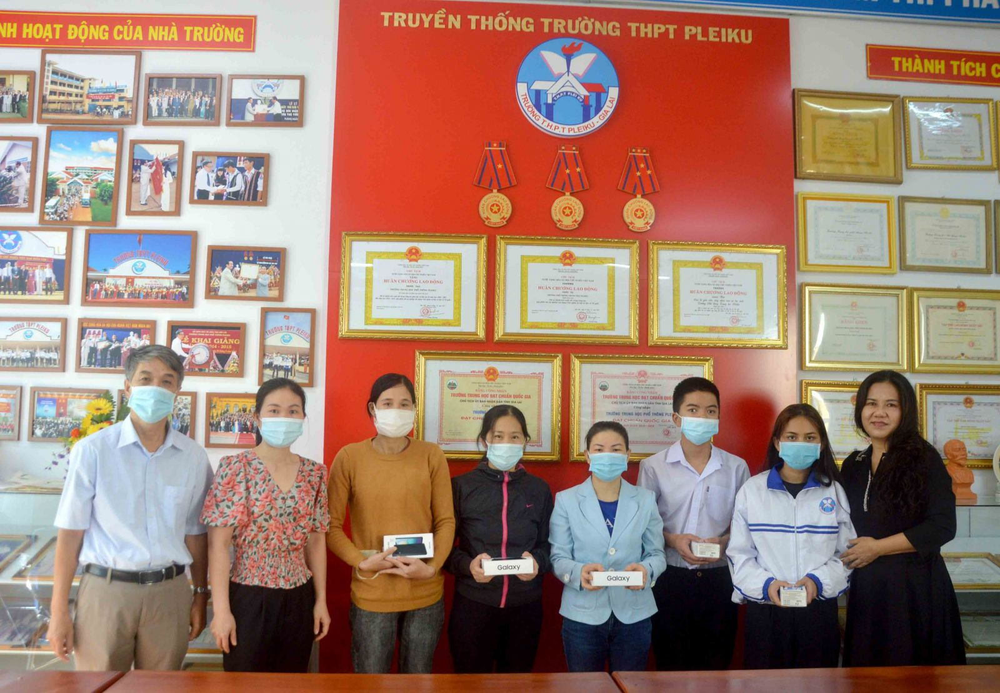
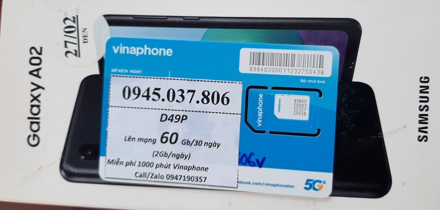
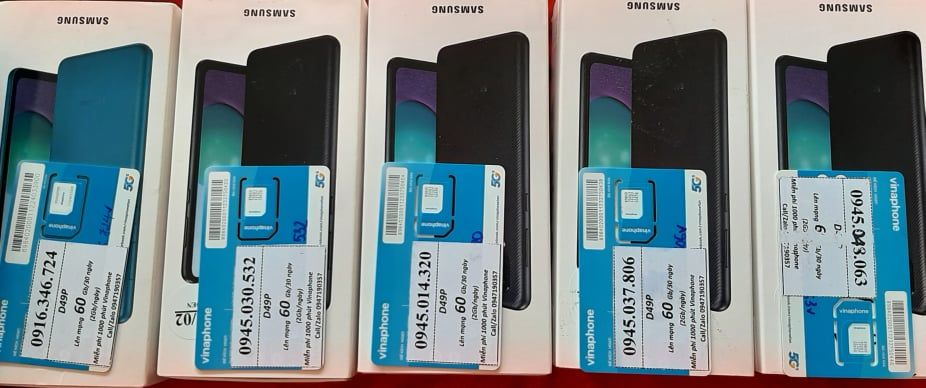
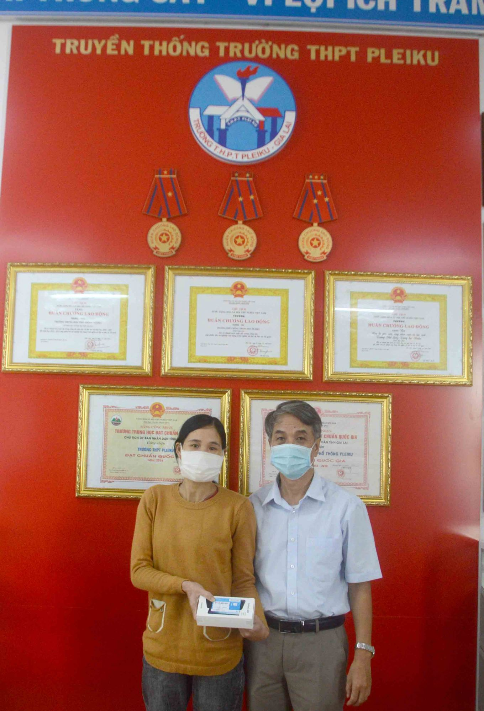
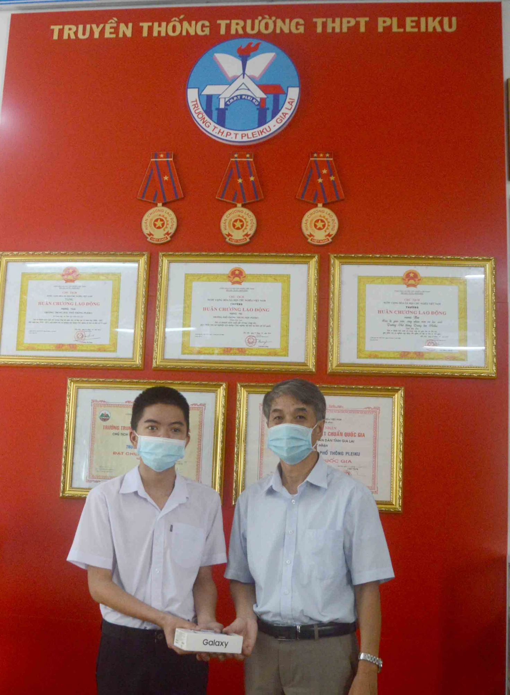
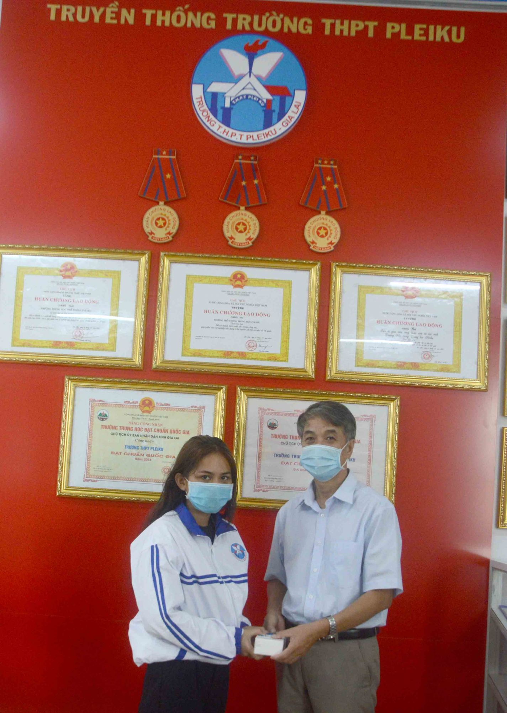
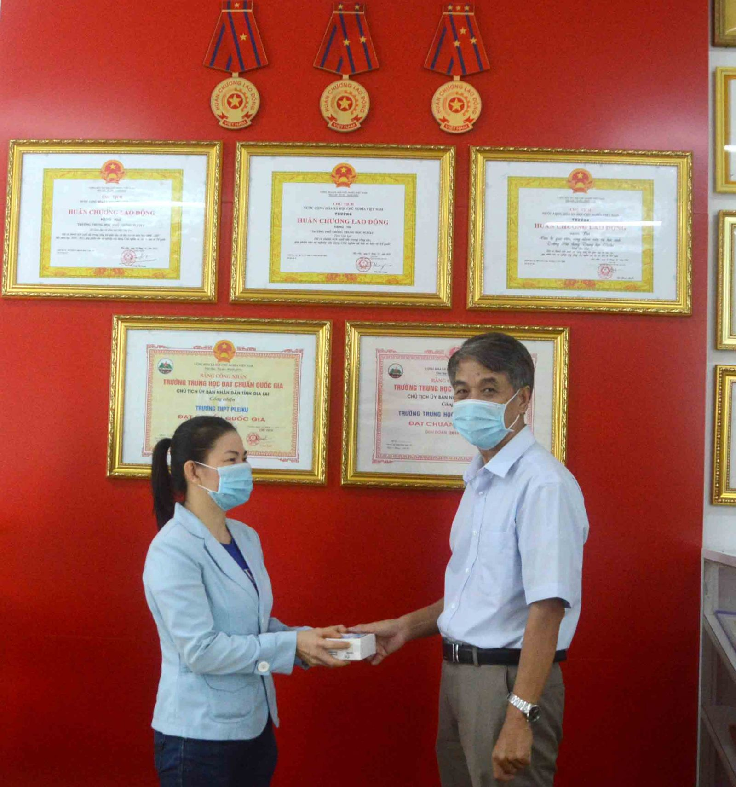
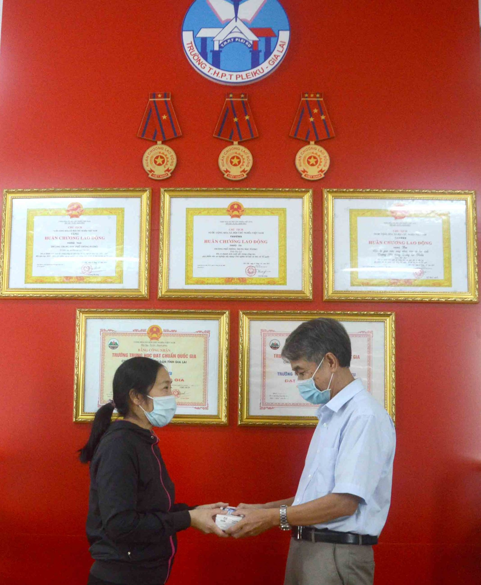
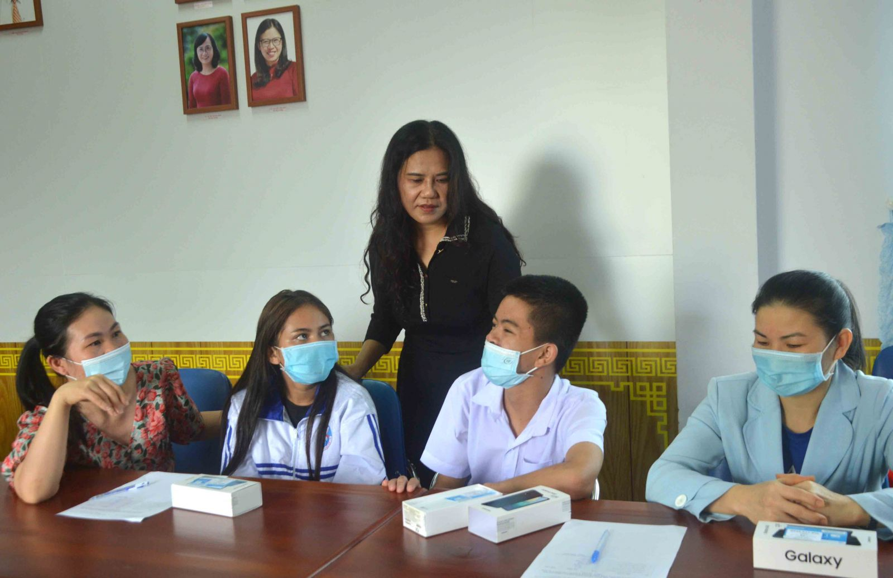
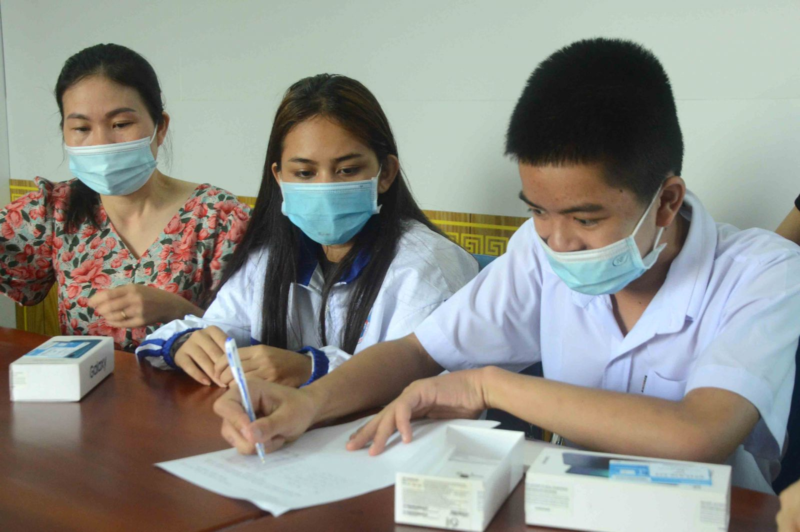

Trường THPT Pleiku: Tặng 6 điện thoại Samsung Galaxy giúp học sinh học trực tuyến
Hưởng ứng Chương trình “Sóng và máy tính cho em” do Thủ tướng Chính phủ Phạm Minh Chính chủ trì phát động cách đây tròn một tháng, sáng 12/10, “Quỹ kết nối yêu thương” của Trường THPT Pleiku, tỉnh Gia Lai đã tổ chức trao tặng 6 điện thoại di động Samsung Galaxy cho các em học sinh có hoàn cảnh khó khăn.
Thầy Nguyễn Đình Trung- Hiệu trưởng nhà trường, cô Nguyễn Thị Đông Hải- Phó Hiệu trưởng cùng đại diện cha mẹ và các em học sinh có hoàn cảnh khó khăn đã có mặt tại buổi trao tặng này.
Tại đây, 6 em học sinh (trong đó có 5 học sinh của Trường THPT Pleiku và 1 em học sinh là con của một nhân viên làm việc tại trường), tất cả đều có hoàn cảnh khó khăn, mỗi em được tặng 1 điện thoại di động nhãn hàng Samsung Galaxy A02 (mới 100%), đi kèm với đó là sim hòa mạng có sẵn, phiếu bảo hành…

Thầy Nguyễn Đình Trung (trái)- Hiệu trưởng, cô Nguyễn Thị Đông Hải (phải)- Phó Hiệu trưởng Trường THPT Pleiku cùng cha mẹ và các em học sinh tại buổi trao tặng điện thoại di động. Ảnh: Minh Vỹ.
Được biết, mỗi chiếc điện thoại có trị giá khoảng 2,7 triệu đồng, tổng số tiền trao tặng đợt này hơn 16 triệu đồng. Số tiền này chủ yếu được trích từ “Quỹ kết nối yêu thương” của Trường THPT Pleiku và thêm một phần đóng góp từ Công đoàn nhà trường.

Như chúng ta đã biết, do ảnh hưởng của đại dịch Covid-19 nên hoạt động tổ chức dạy học trong những tuần đầu tiên của năm học 2021- 2022 gặp nhiều khó khăn. Không ít địa phương trên cả nước, trong đó có TP.Pleiku và tỉnh Gia Lai phải chuyển từ hình thức dạy học trực tiếp sang trực tuyến.
Song, do hệ thống đường truyền internet hạn chế dung lượng, phần mềm dạy học hoạt động chưa tốt, nhiều học sinh thiếu trang thiết bị học tập, sự hỗ trợ của gia đình còn gặp nhiều khó khăn nên việc học ở nhiều nơi, nhiều học sinh hiệu quả chưa cao.

Thấu cảm hoàn cảnh đó, thông qua “Quỹ kết nối yêu thương”, đội ngũ cán bộ quản lý, thầy cô giáo, nhân viên và một số phụ huynh học sinh đã đóng góp trên tinh thần “của ít lòng nhiều” để trao tặng tới các em học sinh có hoàn cảnh khó khăn, mồ côi, con em người đồng bào dân tộc thiểu số.
Những em học sinh của Trường THPT Pleiku được trao tặng đợt này, gồm Phạm Thị Anh Thư (lớp 11C1), Nguyễn Phương Thảo (lớp 11B2), Nguyễn Hoài Diễm Quỳnh (lớp 11C1), Kpă Phạm H’Dung (lớp 10B4), Nguyễn Chu Tấn Phong (lớp 10C1).

Sau khi cầm chiếc điện thoại Samsung Galaxy vừa mới gỡ tem niêm phong trên tay, nam sinh Nguyễn Chu Tấn Phong rơm rớm nước mắt cảm động chia sẻ: “Em không có cha, mẹ em mất sớm khi em vừa tròn một tuổi, em sống với bà ngoại, và từ khi em học lớp 6 đến bây giờ em được cậu mợ em cưu mang và chăm sóc …, bởi vậy lâu nay mỗi khi học trực tuyến thì cậu và mợ của em đã cho em mượn điện thoại để học. Khi nhận được món quà này cũng là lần đầu tiên trong đời em được sở hữu một chiếc điện thoại. Biết mình được nhà trường trao tặng điện thoại lần này, mấy ngày nay em rất vui mừng, khó có thể dùng từ nào để diễn tả nên lời. Sáng nay, em dậy rất sớm, đi bộ từ phường Hội Phú lên Trường THPT Pleiku để nhận quà. Vượt quãng đường xa chừng 5 đến 6 cây số, đối với em chẳng là gì nếu so với tình cảm mà thầy cô dành tặng cho em”.

Học sinh Nguyễn Chu Tấn Phong (trái) lần đầu tiên trong đời sở hữu điện thoại di động riêng. Ảnh: Minh Vỹ.
Cùng chung tâm trạng phấn khởi trên, em Kpă Phạm H’Dung đến từ làng Jut 1, xã Ia Der, huyện Ia Grai thổ lộ: “Trước khi nộp đơn tuyển sinh vào lớp 10, em được một chị bạn cùng làng đang học lớp 11 mách bảo, hãy vào học Trường THPT Pleiku với chị ấy, ở đây nhiều thầy cô giảng dạy rất nhiệt tình, thương yêu học sinh và không phân biệt đối xử. Các bạn học sinh thì thân thiện, hòa đồng, đoàn kết, khuôn viên thoáng đãng, rộng rãi…”.

Học sinh Kpă Phạm H’Dung (trái) từ nay đã có điện thoại di động kết nối mạng để học trực tuyến. Ảnh: Minh Vỹ.
“Mỗi khi học trực tuyến, do trong nhà không có máy tính và điện thoại di động nên em phải mượn điện thoại của một người anh họ gần nhà để theo học. Mượn của người khác bất tiện lắm, nhiều lúc sinh ra cãi nhau mất tình anh em. Bây giờ được nhà trường tặng điện thoại, em vui mừng lắm, xin chân thành gửi lời cảm ơn đến với thầy cô giáo trong toàn trường”, em H’Dung tâm sự thêm.

Chị Nguyễn Thị Giang Hoài Thủy- mẹ của học sinh Nguyễn Hoài Diễm Quỳnh cảm động cho biết: “Nhà tôi có 4 mẹ con, hiện nay đang ở nhờ nhà người khác. Lâu nay cháu thứ hai và thứ ba học trực tuyến chung 1 máy. Thế nên phải luân phiên, hôm nay đứa này dùng điện thoại học thì hôm khác đến lượt đứa kia, học kiểu này chữ được chữ mất khổ lắm nhưng không còn cách nào khác. Từ nay trở đi không còn đau đầu để lên lịch việc học của 2 cháu nữa, tôi mừng lắm. Cảm ơn nhà trường đã giúp đỡ mẹ con tôi tháo gỡ phần nào khó khăn trong giai đoạn hiện nay”.

“Quỹ kết nối yêu thương” của Trường THPT Pleiku ra đời từ đầu năm học 2020- 2021, trực thuộc tổ Tư vấn tâm lý, do cô Nguyễn Thị Đông Hải- Phó Hiệu trưởng là người sáng lập. Đây là nơi kết nối yêu thương giữa thầy cô giáo, nhân viên, phụ huynh, học sinh, cựu học sinh và các Mạnh Thường Quân dành cho các em học sinh kém may mắn trong cuộc sống và gặp khó khăn, hoạn nạn… nhằm lan tỏa yêu thương và truyền thêm thêm năng lượng tích cực cho các em trong cuộc sống.
.jpg)
Cô Nguyễn Thị Đông Hải- Phó Hiệu trưởng Trường THPT Pleiku dặn dò, động viên học sinh sử dụng điện thoại di động đúng mục đích. Ảnh: Minh Vỹ.
Chẳng hạn, trong dịp Tết Nguyên đán Tân Sửu 2021, “Quỹ kết nối yêu thương” đã trích tặng 20 suất quà cho những em học sinh của Trường THPT Pleiku có hoàn cảnh khó khăn. Đặc biệt, vào cuối tháng 5 và đầu tháng 6 vừa qua, em Vương Thị Thu Thuận là học sinh của trường bị tai nạn giao thông phải nhập viện cấp cứu trong khi tình cảnh gia đình gặp rất nhiều khó khăn. Chứng kiến gia cảnh này, “Quỹ kết nối yêu thương” đã khởi xướng, vận động quyên góp hỗ trợ, giúp đỡ em Thuận với tổng số tiền khoảng gần 100 triệu đồng…

“Yêu thương cho đi là yêu thương còn mãi, hy vọng rằng món quà lần này tuy không lớn về giá trị vật chất, nhưng đó là cả tấm lòng, tình yêu thương của quý thầy cô giáo Trường THTP Pleiku dành cho các em. Hy vọng các em sẽ tham gia học tập online tốt hơn trong mùa dịch và luôn mong các em hãy sử dụng món quà này để kết nối với thầy cô, bạn bè và người thân một cách hữu ích”, cô Đông Hải chia sẻ.

Bài, ảnh: Nguyễn Thị Đông Hải- Nguyễn Minh Vỹ